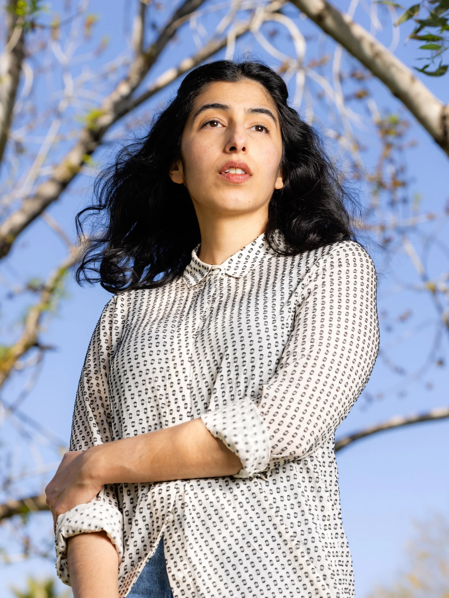

Solmaz Sharif

Born in Istanbul to Iranian parents, Solmaz Sharif is the author of Customs (Graywolf Press, 2022) and Look (Graywolf Press, 2016), a finalist for the National Book Award.
She holds degrees from U.C. Berkeley, where she studied and taught with June Jordan’s Poetry for the People, and New York University. Her work has appeared in Harper’s, The Paris Review, Poetry, The Kenyon Review, the New York Times, and others.
Her work has been recognized with a “Discovery”/Boston Review Poetry Prize, Rona Jaffe Foundation Writers’ Award, and Holmes National Poetry Prize from Princeton University.
She has received fellowships from the National Endowment for the Arts, Lannan Foundation, and Stanford University. She is currently an Assistant Professor in Creative Writing at Arizona State University where she is inaugurating a Poetry for the People program.